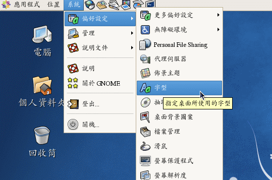

从前面的说明来看，我们知道一个 X 窗口系统能不能成功启动，其实与 X Server 有很大的关系的。因为 X Server
负责的是整个画面的描绘，所以没有成功启动 X Server 的话，即使有启动 X Client 也无法将图样显示出来啊。所以，底下我们就针对
X Server 的配置档来做个简单的说明，好让大家可以成功的启动 X Window System 啊。
基本上， X Server 管理的是显卡、萤幕解析度、鼠标按键对应等等，尤其是显卡芯片的认识，真是重要啊。
此外，还有显示的字体也是 X Server 管理的一环。基本上，X server 的配置档都是默认放置在
/etc/X11 目录下，而相关的显示模块或上面提到的总总模块，则主要放置在 /usr/lib/xorg/modules
底下。比较重要的是字型档与芯片组，她们主要放置在:
- 提供的萤幕字型: /usr/share/X11/fonts/
- 显卡的芯片组: /usr/lib/xorg/modules/drivers/
在 CentOS 底下，我们可以透过 chkfontpath 这个命令来取得目前系统有的字型文件目录。
这些都要透过一个统一的配置档来规范，那就是 X server 的配置档啦。这个配置档的档名就是 /etc/X11/xorg.conf 喔！
 解析 xorg.conf 配置
解析 xorg.conf 配置
如同前几个小节谈到的，在 Xorg 基金会里面的 X11 版本为 X11R7.xx ，那如果你想要知道到底你用的 X
Server 版本是第几版，可以使用 X 命令来检查喔！(你必须以 root 的身分运行下列命令)
[root@www ~]# X -version
X Window System Version 7.1.1
Release Date: 12 May 2006
X Protocol Version 11, Revision 0, Release 7.1.1
Build Operating System: Linux 2.6.18-53.1.14.el5PAE i686 Red Hat, Inc.
Current Operating System: Linux localhost.localdomain 2.6.18-128.1.14.el5 #1
SMP Wed Jun 17 06:40:54 EDT 2009 i686
Build Date: 21 January 2009
Build ID: xorg-x11-server 1.1.1-48.52.el5
Before reporting problems, check http://wiki.x.org
to make sure that you have the latest version.
Module Loader present
|
由上面的几个关键字我们可以知道，目前鸟哥的这部测试机使用的 X server 是 Xorg 计画所提供的 X11R7 版，
若有问题则可以到 http://wiki.x.org 去查询～因为是 Xorg 这个 X server ，因此我们的配置档档名为 /etc/X11/xorg.conf
这一个哩。所以，理解这个文件的内容对於 X server 的功能来说，是很重要的。
注意一下，在修改这个文件之前，务必将这个文件给她备份下来，免的改错了甚么东西导致连 X server
都无法启动的问题啊。这个文件的内容是分成数个段落的，每个段落以 Section 开始，以 EndSection 结束，
里面含有该 Section (段落) 的相关配置值，例如:
Section "section name"
…… <== 与这个 section name 有关的配置项目
……
EndSection
|
至於常见的 section name 主要有:
- Module: 被加载到 X Server 当中的模块
(某些功能的驱动程序)；
- InputDevice: 包括输入的 1.
键盘的格式 2. 鼠标的格式，以及其他相关输入设备；
- Files: 配置字型所在的目录位置等；
- Monitor: 监视器的格式，
主要是配置水平、垂直的升级频率，与硬件有关；
- Device: 这个重要，就是显卡芯片组的相关配置了；
- Screen:
这个是在萤幕上显示的相关解析度与色彩深度的配置项目，与显示的行为有关；
- ServerLayout:
上述的每个项目都可以重覆配置，这里则是此一 X server 要取用的哪个项目值的配置罗。
好了，直接来看看这个文件的内容吧！这个文件默认的情况是取消很多配置值的，所以你的配置档可能不会看到这么多的配置项目。
不要紧的，后续的章节会交代如何配置这些项目的喔！
[root@www ~]# cd /etc/X11
[root@www X11]# cp -a xorg.conf xorg.conf.20090713 <== 有备份有保佑
[root@www X11]# vim xorg.conf
Section "Module"
Load "dbe"
Load "extmod"
Load "record"
Load "dri"
Load "xtrap"
Load "glx"
Load "vnc"
EndSection
# 上面这些模块是 X Server 启动时，希望能够额外获得的相关支持的模块。
# 关於更多模块可以搜寻一下 /usr/lib/xorg/modules/extensions/ 这个目录
Section "InputDevice"
Identifier "Keyboard0"
Driver "kbd"
Option "XkbModel" "pc105"
Option "XkbLayout" "us" <==注意，是 us 美式键盘对应
EndSection
# 这个玩意儿是键盘的对应配置数据，重点在於 XkbLayout 那一项，
# 如果没有问题的话，我们台湾地区应该都是使用美式键盘对应按钮的。
# 特别注意到 Identifier (定义) 那一项，那个是在说明，我这个键盘的配置档，
# 被定义为名称是 Keyboard0 的意思，这个名称最后会被用於 ServerLayout 中
Section "InputDevice"
Identifier "Mouse0"
Driver "mouse"
Option "Protocol" "auto"
Option "Device" "/dev/input/mice"
Option "ZAxisMapping" "4 5 6 7" <==滚轮支持
EndSection
# 这个则主要在配置鼠标功能，重点在那个 Protocol 项目，
# 那个是可以指定鼠标介面的配置值，我这里使用的是自动侦测！不论是 U盘/PS2。
Section "Files"
RgbPath "/usr/share/X11/rgb"
ModulePath "/usr/lib/xorg/modules"
FontPath "unix/:7100" <==使用另外的服务来提供字型定义
FontPath "built-ins"
EndSection
# 我们的 X Server 很重要的一点就是必须要提供字型，这个 Files
# 的项目就是在配置字型，当然啦，你的主机必须要有字型档才行。一般字型文件在：
# /usr/share/X11/fonts/ 目录中。至於那个 Rgb 是与色彩有关的项目。
# 相关的字型说明我们会在下一小节的 xfs 在跟大家报告。
Section "Monitor"
Identifier "Monitor0"
VendorName "Monitor Vendor"
ModelName "Monitor Model"
HorizSync 30.0 - 80.0
VertRefresh 50.0 - 100.0
EndSection
# 萤幕监视器的配置仅有一个地方要注意，那就是垂直与水平的升级频率。
# 在上面的 HorizSync 与 VerRefresh 的配置上，要注意，不要配置太高，
# 这个玩意儿与实际的监视器功能有关，请查询你的监视器手册说明来配置吧！
# 传统 CRT 萤幕配置太高的话，据说会让 monitor 烧毁呢，要很注意啊。
Section "Device" <==显卡的驱动程序项目
Identifier "Card0"
Driver "vesa" <==实际的驱动程序喔！
VendorName "Unknown Vendor"
BoardName "Unknown Board"
BusID "PCI:0:2:0"
EndSection
# 这地方重要了，这就是显卡的芯片模块加载的配置区域。由於鸟哥使用 Virtualbox
# 模拟器模拟这个测试机，因此这个地方显示的驱动程序为通用的 vesa 模块。
# 更多的显示芯片模块可以参考 /usr/lib/xorg/modules/drivers/
Section "Screen" <==与显示的画面有关，解析度与色彩深度
Identifier "Screen0"
Device "Card0" <==使用哪个显卡来提供显示
Monitor "Monitor0" <==使用哪个监视器
SubSection "Display" <==此阶段的附属配置项目
Viewport 0 0
Depth 16 <==就是色彩深度
Modes "1024x768" "800x600" "640x480" <==解析度
EndSubSection
SubSection "Display"
Viewport 0 0
Depth 24
Modes "1024x768" "800x600"
EndSubSection
EndSection
# Monitor 与实际的显示器有关，而 Screen 则是与显示的画面解析度、色彩深度有关。
# 我们可以配置多个解析度，实际应用时可以让使用者自行选择想要的解析度来呈现。
# 不过，为了避免困扰，鸟哥通常只指定一到两个解析度而已。
Section "ServerLayout" <==实际选用的配置值
Identifier "X.org Configured"
Screen 0 "Screen0" 0 0 <==解析度等
InputDevice "Mouse0" "CorePointer" <==鼠标
InputDevice "Keyboard0" "CoreKeyboard" <==键盘
EndSection
# 我们上面配置了这么多的项目之后，最后整个 X Server 要用的项目，
# 就通通一骨脑的给他写入这里就是了，包括键盘、鼠标以及显示介面啊。
# 其中 screen 的部分还牵涉到显卡、监视器萤幕等配置值呢！
|
上面配置完毕之后，就等於将整个 X Server 配置妥当了，很简单吧。
如果你想要升级其他的例如显示芯片的模块的话，就得要去硬件开发商的网站下载原始档来编译才行。
配置完毕之后，你就可以启动 X Server 试看看罗。基本上，如果你的 Files 那个项目用的是直接写入字型的路径，
那就不需要启动 XFS (X Font Server)，如果是使用 font server 时，就要先启动 xfs ：
# 1. 启动 xfs 服务：
[root@www ~]# /etc/init.d/xfs start
# 2. 测试 X server 的配置档是否正常：
[root@www ~]# startx <==直接在 runlevel 3 启动 X 看看
[root@www ~]# X :1 <==在 tty8 单独启动 X server 看看
|
当然，你也可以利用 init 5 这个命令直接切换到图形介面的登陆来试看看罗。
Tips:
经由讨论局域网友的说明，如果你发现明明有捉到显卡驱动程序却老是无法顺利启动 X 的话，可以尝试去官网取得驱动程序来安装，
也能够将『Device』阶段的『Driver』修改成默认的『Driver "vesa"』，使用该驱动程序来暂时启动 X 内的显卡喔！
|  |
X Font Server (XFS)
与加入额外中文字形
与 X 有关的配置档主要是 /etc/X11/xorg.conf 这个主配置档，但是刚刚上头解析这个文件时，在 Files 的部分我们还提到了
X Font Server (XFS) 这个服务喔！这个是啥咚咚？这个服务的目的在提供 X server 字型库啦！
也就是说， X server 所使用的字型其实是 XFS 这个服务所提供的，因此没有启动 XFS 服务时，你的 X server
是无法顺利启动的喔！所以，我们当然就来瞧瞧这玩意儿的功能罗！
这个 XFS 的主配置档在 /etc/X11/fs/config ，而字型档则在
/usr/share/X11/fonts/ ，这里再次给他强调一下。
至於启动的脚本则在 /etc/init.d/xfs 罗！好，那我们就先来瞧瞧主配置档的内容是怎样的配置吧！
[root@www ~]# vi /etc/X11/fs/config
client-limit = 10 <==最多允许几个 X server 向我要求字型(因为跨网络)
clone-self = on <==与效能有关，若 xfs 达到限制值，启动新的 xfs
catalogue = /usr/share/X11/fonts/misc:unscaled,
/usr/share/X11/fonts/75dpi:unscaled,
/usr/share/X11/fonts/100dpi:unscaled,
/usr/share/X11/fonts/Type1,
/usr/share/X11/fonts/TTF,
/usr/share/fonts/default/Type1,
# 上面这些咚咚，就是字型文件的所在！如果你有新字型，可以放置在该目录。
default-point-size = 120 <==默认字型大小，单位为 1/10 点字 (point)
default-resolutions = 75,75,100,100 <==这个则是显示的字型像素 (pixel)
deferglyphs = 16 <==延迟显示的字型，此为 16 bits 字型
use-syslog = on <==启动支持错误登录
no-listen = tcp <==启动 xfs 於 socket 而非 TCP
|
上面这个文件的配置重点在 catalogue 那个配置项目当中。你可以使用 chkfontpath
这个命令来列出目前支持的字型文件，也可以直接修改呢！
另外，虽然目前的 CentOS 已经是支持多国语系了，因此你可以直接在安装完毕后就看到中文，
不过默认的中文字形可能让你不太满意～此时，你可以选择额外的中文字形显示喔。比较有名的中文字形除了默认提供的文鼎字型外，
还有一种台北字型 (taipeifonts)，不过这种字形是 utf-8 编码的，因此默认并没有在你的字型支持之中
(因为目前大多使用万国码来显示中文了)。如果你想要测试一下这种字形，除了自行下载字型档之外，
我们可以使用 CentOS 提供的软件来处理喔！看看底下的作法吧：
# 1. 先安装中文字形软件，亦即 fonts-chinese 这个软件名
[root@www ~]# yum install fonts-chinese
# 2. 查阅 taipei 字型的所在目录位置：
[root@www ~]# rpm -ql fonts-chinese | grep taipei
/usr/share/fonts/chinese/misc/taipei16.pcf.gz <==重点在目录！
/usr/share/fonts/chinese/misc/taipei20.pcf.gz
/usr/share/fonts/chinese/misc/taipei24.pcf.gz
# 3. 创建字型档的目录架构
[root@www ~]# cd /usr/share/fonts/chinese/misc
[root@www ~]# mkfontdir
# 这个命令在建置 fonts.dir 这个文件，提供字型文件目录的说明。
# 4. 将上述的目录加入 xfs 的支持之中：
[root@www ~]# chkfontpath -a /usr/share/fonts/chinese/misc/
[root@www ~]# chkfontpath
....(前面省略)....
/usr/share/fonts/chinese/misc:unscaled
/usr/share/fonts/chinese/misc <==这两行会被新增出来！
[root@www ~]# /etc/init.d/xfs restart
# 5. 在 X window 底下启动终端机，测试一下有没有捉到该字型？
[root@www ~]# xlsofnts | grep taipei
# 如果顺利的话，你会看到有几个 taipeiXX 的字样在萤幕上出现！
|
这个时候的 X server 已经有新支持的中文字形了，很简单吧！不过如果你想要让 X client
可以使用额外的字型的话，还得要使用 fontconfig 的软件提供的 fc-cache
来创建字型缓存档才行 (注4)！
如果想要使用额外的字型的话，你可以自行取得某些字型来处理的。鸟哥这边从 Windows
取得三个文件来作为测试，这边得注明一下是纯粹的测试，测试完毕后文件就给她拿掉了，
并没有持续使用喔！并没有想要违法的意思啦～大家参考看看就好了。这三个文件分别是
kaiu.ttf mingliu.ttc times.ttf，代表的是中楷体、明体、times and Romans 三种字体。
那就来看看如何添加字型吧！(假设上述的三个字体档是放置在 /root 中)
# 1. 将上述的三个文件放置到系统配置目录，亦即底下的目录中：
[root@www ~]# cd /usr/share/fonts/
[root@www ~]# mkdir windows
[root@www ~]# cp /root/*.tt[fc] /usr/share/fonts/windows
# 2. 使用 fc-cache 将上述的文件加入字型的支持中：
[root@www ~]# fc-cache -f -v
....(前面省略)....
/usr/share/fonts/windows: caching, 4 fonts, 0 dirs
....(中间省略)....
fc-cache: succeeded
# -v 仅是列出目前的字型数据， -f 则是强制重新创建字型缓存！
# 3. 透过 fc-list 列出已经被使用的文件看看：
[root@www ~]# fc-list : file <==找出被缓存住的档名
....(前面省略)....
/usr/share/fonts/windows/kaiu.ttf:
/usr/share/fonts/windows/times.ttf:
/usr/share/fonts/windows/mingliu.ttc:
....(后面省略)....
|
透过 fc-cache 以及 fc-list 去确认过字型确实存在后，就能够使用窗口管理员的功能去检查字型档了。
以 GNOME 为例，在『系统』-->『偏好配置』-->『字型』点选后，就会出现可以调整的字型，
接下来你就会发现多出了『标楷体、细明体、新细明体』等字体可以选择罗！试看看吧！鸟哥调整成为『Times and Roman』
出现如下图的结果呢！参考看看：

图 2.2.1、中文字形的调整结果
配置档重建与显示器参数微调
如果你修改 xorg.conf 结果改错了，导致无法顺利的启动 X server 时，偏偏又忘记制作备份档！该如何是好？
没关系，我们的 Xorg 有提供不错的工具可以处理。同时 CentOS 也有提供相关的配置命令，
那就是在第二十一章提到的 setup 这个命令啦！
详细的配置请自行前往参考，在这里我们要介绍的是使用 Xorg 重新制作出配置档啦！你可以使用 root 的身份这样运行：
[root@www ~]# Xorg -configure :1
|
此时 X 会主动的以内建的模块进行系统硬件的探索，并将硬件与字型的侦测结果写入 /root/xorg.conf.new
这个文件里面去，这就是 xorg.conf 的重制结果。不过，这个新建的文件不见得真的能够启动 X server ，
所以我们必须要使用底下的命令来测试一下这个新的配置档是否能够顺利的运行：
[root@www ~]# X -config /root/xorg.conf.new :1
|
因为鸟哥不知道你到底是在 runlevel 几号，因此上述的测试通通是在 tty8 的终端机上面显示 (display 1)，
这样就能够避免切换到不同的 runlevel 罗～如果一切顺利的话，你就可以将 /root/xorg.conf.new 复制成为
/etc/X11/xorg.conf 覆盖掉修改错误的文件，然后重新启动 X ，嘿嘿！应该就能够顺利的救回来你的 X Window System
罗！
有些朋友偶而会这样问：『我的显示器明明还不错，但是萤幕解析度却永远只能达到 800x600 而已，
这该如何处理？』，萤幕的解析度应该与显卡相关性不高，而是与显示器的升级频率有关！
所谓的升级频率，指的是在一段时间内萤幕重新绘制画面的速度。举例来说， 60Hz 的升级频率，
指的是每秒钟画面升级 60 次的意思。那么关於显示器的升级频率该如何调整呢？
你得先去找到你的显示器的使用说明书 (或者是网站会有规格介绍)，取得最高的升级率后，接下来选择你想要的解析度，
然后透过这个 gtf 的命令功能来调整：
[root@www ~]# gtf 水平像素 垂直像素 升级频率 [-xv]
选项与参数：
水平像素：就是解析度的 X 轴
垂直像素：就是解析度的 Y 轴
升级频率：与显示器有关，一般可以选择 60, 75, 80, 85 等频率
-x ：使用 Xorg 配置档的模式输出，这是默认值
-v ：显示侦测的过程
# 1. 使用 1024x768 的解析度，75 Hz 的升级频率来取得显示器内容
[root@www ~]# gtf 1024 768 75 -x
# 1024x768 @ 75.00 Hz (GTF) hsync: 60.15 kHz; pclk: 81.80 MHz
Modeline "1024x768_75.00" 81.80 1024 1080 1192 1360 768 769 772 802 -HSync +Vsync
# 重点是 Modeline 那一行！那行给他抄下来
# 2. 将上述的数据输入 xorg.conf 内的 Monitor 项目中：
[root@www ~]# vim /etc/X11/xorg.conf
Section "Monitor"
Identifier "Monitor0"
VendorName "Monitor Vendor"
ModelName "Monitor Model"
Modeline "1024x768_75.00" 81.80 1024 1080 1192 1360 768 769 772 802 -HSync +Vsync
EndSection
# 就是新增上述的那行特殊字体部分到 Monitor 的项目中即可。
|
然后重新启动你的 X ，这样就能够选择新的解析度罗！那如何重新启动 X 呢？两个方法，
一个是『 init 3 ; init 5 』从文字模式与图形模式的运行等级去切换，另一个比较简单，
如果原本就是 runlevel 5 的话，那么在 X 的画面中按下『 [alt] + [crtl] + [backspace] 』三个组合按键，
就能够重新启动 X 窗口罗！